Assistência Psicossocial e à Saúde
Prestamos apoio a pessoas com distúrbios psíquicos, deficiência mental e dependência química, promovendo o tratamento e reintegração social através de programas de acompanhamento psicossocial.
Oferecemos apoio abrangente e humanizado a pessoas com distúrbios psíquicos, deficiência mental e dependência química, com o compromisso de promover tratamento adequado e reintegração social. Acreditamos que todos merecem uma chance de recomeçar, superando desafios e conquistando uma vida mais equilibrada e digna.
Nossos programas de acompanhamento psicossocial são personalizados, abordando tanto os aspectos clínicos quanto o desenvolvimento emocional, social e familiar dos atendidos. Com equipes multidisciplinares, formadas por profissionais de saúde mental, psicólogos, assistentes sociais e terapeutas, oferecemos suporte integral em todas as fases do processo de recuperação.
O foco está na promoção da autonomia e da autoestima, com atividades terapêuticas, educativas e de convívio social, respeitando o ritmo de cada indivíduo. Além do tratamento, preparamos para a reintegração social, reconstruindo laços familiares e comunitários, e combatendo o estigma. Nosso objetivo é transformar vidas e oferecer novas perspectivas para um futuro saudável e pleno.
 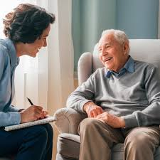
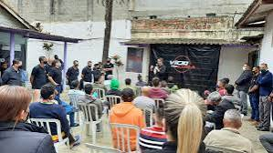
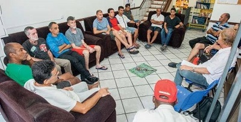
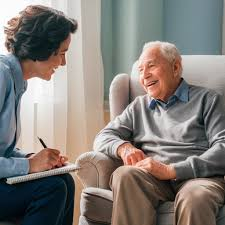
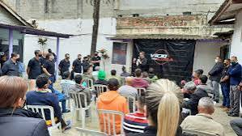
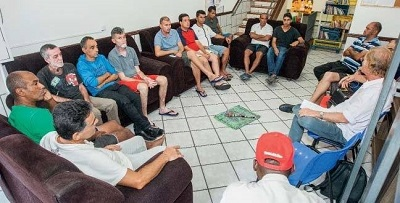
 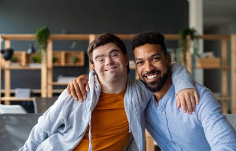
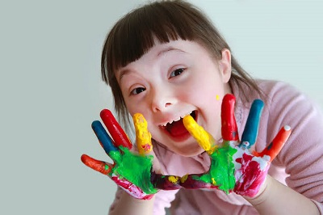
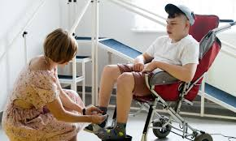
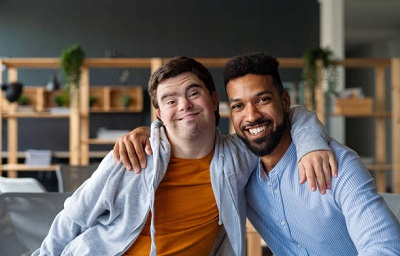
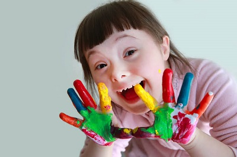
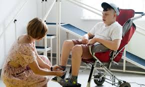